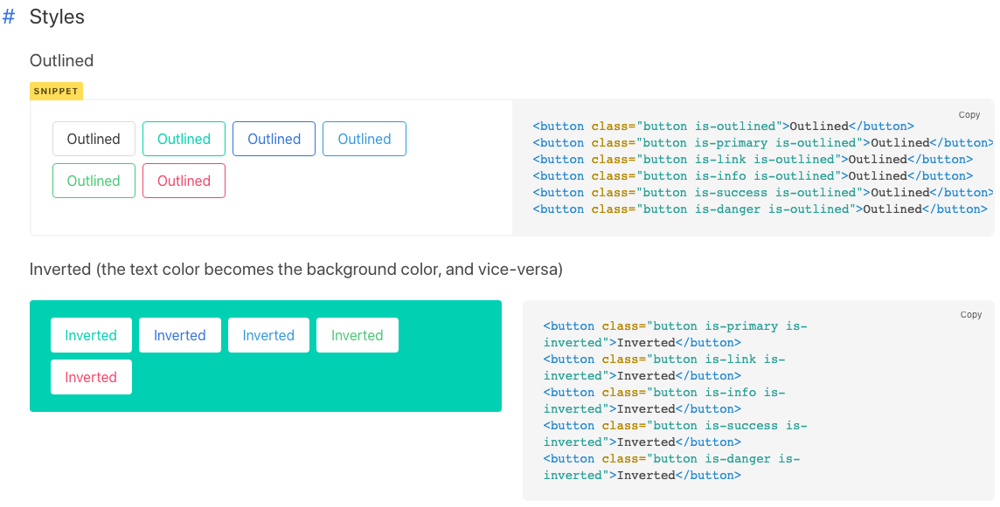

Github page 블로그 시작 (hexo icarus 설정)
예전부터 미뤄왔던 블로그를 이제서야 시작해본다.
첫글은 hexo icarus 테마 중 내가 몇가지 수정한 것을 포스팅
- 한글 font 변경
- profile 변경
- article 가독성을 위해 변경
- 그 외에도 몇가지 (방문자수 등)
intro
hexo 관련 구글링을 하다보면 거의 모든 hexo 블로그의 시작 포스팅은 이 hexo 설정글이다.
hexo 설치나 기본 포스팅 방법들은 구글링하면 잘 정리해둔 블로그들이 엄청 많으니 생략하고,
나도 그 설정글 작성에 동참을 해보기 위해 몇가지 내가 수정한 사항들만 포스팅해본다.
수정한 내용 중 틀린부분이 있을 수 있습니다.
혹시 틀린부분이나 더 정확한 수정방법이 있으면 댓글 남겨주세요.
icarus 설정
icarus 릴리즈노트를 보면 3.0 대로 버전이 올라가면서 레이아웃이 JSX과 Inferno.js으로 모두 변경되었다고 한다.
icarus 설정글 구글링시 대부분 기존 html 템플릿 엔진인 ejs를 기준으로 작성된 블로그가 대부분이다..
프론트엔드쪽을 많이 본적은 없지만 jsx 문법은 꽤나 직관적인것 같다. 아직은 몇가지 스타일만 변경하였는데 jsx도 조금씩 수정해봐야겠다.
이 글은 icarus 3.0.0 버전을 기준으로 작성합니다.
한글 font 변경
icarus 기본 한글 글씨체도 나쁘지 않았지만, 나눔스퀘어라운드 폰트를 사용하기로 했다.
폰트 cdn import
아래 cdn 주소를 import 해준다.themes/icarus/source/css/default.styl 1
@import url(https://cdn.rawgit.com/innks/NanumSquareRound/master/nanumsquareround.css)
폰트 지정
기존$family-sans-serif라인을 주석처리 한뒤, 아래처럼 지정한다.themes/icarus/include/style/base.styl 1
2// $family-sans-serif ?= Ubuntu, Roboto, 'Open Sans', 'Microsoft YaHei', sans-serif
$family-sans-serif ?= 'NanumSquareRound', "Helvetica Neue", sans-serif
profile 변경
기존 profile 위젯의 하단은 무조건 follow 라는 github 링크 버튼이 따라다니는데, 뭔가 테마에 맞지 않는 파란색으로 느껴졌다. 그리고 포스팅 내용을 본 뒤 home으로 가는 버튼이 있으면 좋을것 같아 해당 위치의 버튼을 home 버튼기능으로 변경하고, 디자인도 변경하였다.
icarus 테마는 Bulma라는 CSS 프레임웍을 사용한다.
https://bulma.io/documentation/elements/button/#styles 에서 다양한 버튼이 확인 가능하다.

themes/icarus/layout/widget/profile.jsx을 보면 기존 followLink 코드를 볼 수 있다.
1 | {followLink ? <div class="level"> |
github follow 기능을 유지하고 버튼 스타일만 변경할 경우 위 코드의 class 부분을 bulma 링크에서 고른 원하는 스타일로 예) “level-item button is-info is-outlined is-rounded” 으로 변경 하면 되고, 기능도 home으로 변경하려면 기존의 위 코드를 주석 처리하고 아래의 코드를 넣어준다.
아래 코드로 변경하면 profile widget의 followLink가 아닌 홈(“/“) 경로로 static하게 고정된다.
1 | <div class="level"> |
article 가독성을 위해 변경
포스팅의 가독성은 hexo Tranquilpeak 테마의 스타일이 좋은것 같았다. 해당 스타일의 css을 참고하여 나의 입맛에 맞추어 수정 하였다.
포스트 제목 폰트 변경 (
&.article밑.title이 없을텐데 2~5줄 코드를 추가)themes/icarus/include/style/article.styl 1
2
3
4
5&.article
.title
font-size: 2.0em
font-weight: 700
letter-spacing: -1.4px;포스트 내용 폰트 변경 (
.content 내용을 아래와 같이 수정/추가)themes/icarus/include/style/article.styl 1
2
3
4
5
6.content
font-size: $article-font-size
line-height: 1.9em;
letter-spacing: -0.3px;
color: #5d686f;
margin-top: 20px;heading 폰트 변경 (
h1과h2수정)
heading 간격이 너무 붙어 있어서 조금 벌리고, h1, h2 폰트사이즈도 큰 차이가 없는것 같아서 수정themes/icarus/include/style/article.styl 1
2
3
4
5
6
7
8h1
font-size: 1.95em
font-weight: 600
margin-top: 50px;
h2
font-size: 1.5em
margin-top: 35px;columns 사이즈 변경
widescreen일 경우 포스팅내용의 좌우폭을 늘림, bulma의 columns 사이즈를 참고하여 기본 layout 사이즈를 1 높였다.메뉴얼을 보면 항상 12 columns 를 맞추게 되어있는데 내 블로그의 경우 블로그 내용을 볼때는 위젯을 우측 한줄만 사용함으로 사이즈를 1 높이면, widgets.jsx 을 1 줄여야 할것 같은데 생각보다 위젯이 너무 좁아보여서 그냥 포스팅 내용 폭만 늘렸다. (css를 잘몰라서 사용해보다가 이상한 부분이있으면 다시 조정해야겠다.)
내 블로그는
글을 눌러서 볼때columnsCount 가 2줄이므로 아래 7번째줄 코드만is-9-widescreen으로 사이즈 1증가themes/icarus/layout/layout.jsx 1
2
3
4
5
6
7
8
9
10
11
12<div class="columns">
<div class={classname({
column: true,
'order-2': true,
'column-main': true,
'is-12': columnCount === 1,
'is-8-tablet is-8-desktop is-9-widescreen': columnCount === 2,
'is-8-tablet is-8-desktop is-6-widescreen': columnCount === 3
})} dangerouslySetInnerHTML={ __html: body }></div>
<Widgets site={site} config={config} helper={helper} page={page} position={'left'} />
<Widgets site={site} config={config} helper={helper} page={page} position={'right'} />
</div>
그 외에도 몇가지
그외에도 이것저것 수정을 했는데 다 기억이 나지 않는다..
혹시 필요한 부분이 있다면 댓글 부탁드립니다.
- logo image 크기 늘림
- navbar 의 메뉴간 사이 변경
- Google Analytics는 계정생성 후
themes/icarus/_config.yml에tracking_id추가시 적용 됨. - 포스팅별 읽은 수 및 footer에 나오는 총 방문자는
busuanzi: true만 적용하니 잘 적용 됨.- 덴마크어 yml만 적용되어있어서 처음 변경시 덴마크어로 나오는데,
themes/icarus/languages/ko.yml에plugin: visit:과visitor:추가하여 한글추가
- 덴마크어 yml만 적용되어있어서 처음 변경시 덴마크어로 나오는데,
- 등
끝.